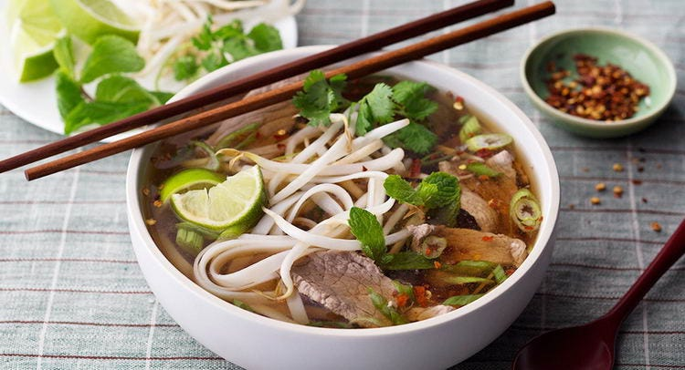

Pho

Description
Pho is a soup consisting of bone broth, rice noodles, thinly-sliced meat (in this recipe, it's beef), and fresh garnishes.
- Step 1:Roast the beef bones and onions until the bones are browned and the onions are soft.
- Step 2:Make the broth.
- Step 3:Soak the rice noodles for an hour. Meanwhile, bring the broth to a simmer.
- Step 4:Boil the noodles, then drain and add them to a bowl.
- Step 5:Top with sirloin, cilantro, green onion, and broth. Garnish with your desired toppings.